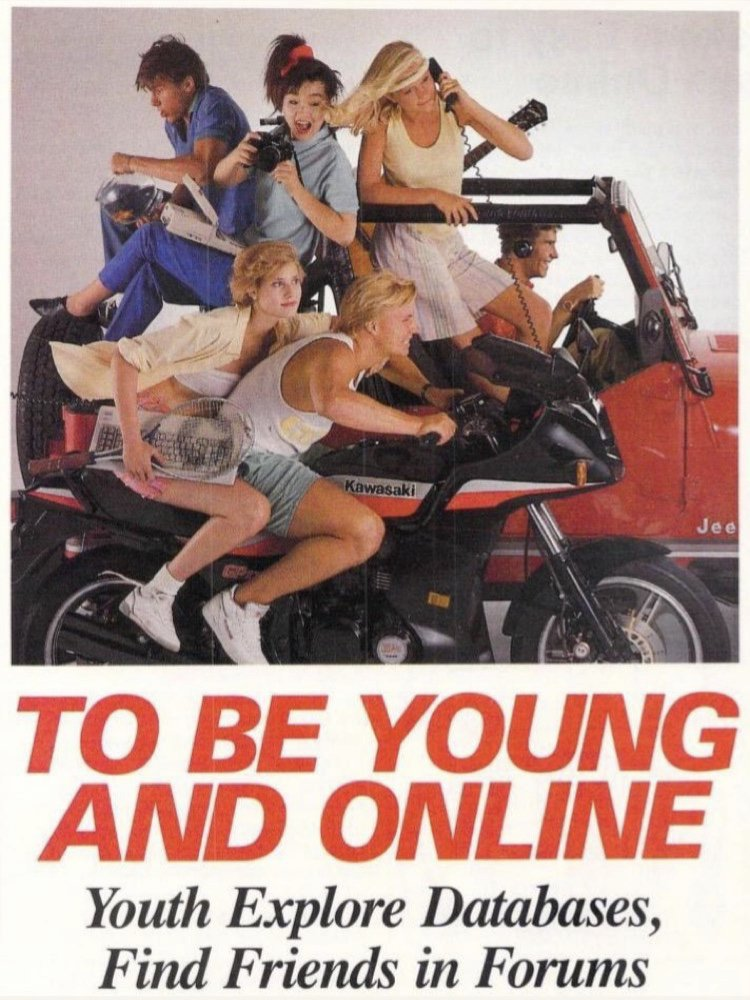

|
" web Site" web Site"


In 1997, Dr. Gene Ray made a borderline-incomprehensible site.
Today, I use it as a template for my own directory.
it could be out of nostalgia of static HTML in the 90's,
or a fondness for the oddball nature of the web.
No harm is meant in this "parody", and any such interpretations
I am more than happy to address or remedy.
The site will have links, they will lead to things I do.
They might also just link to things I like.
Either way, enjoy your stay and use it wisely.
No man on Earth has no belly-button,
it proves every believer on Earth a liar.
Children will be blessed for
Knowing the Hot Takes
Without the brainrot of Twitter.
Life lived in Quadrants
Practicing Boring Multitudes -
UponEarth we exist together.
Boring Adult VS living
Terminally Online
1. I am most dumb.
Not 1 Human Except Dead 1.
Man Is monke, return to such.
1 Of Internet Still 1 Internet
Marshmallow A Lie & Word Is Lies.
Never Connects 4, bad at it
God Is A Woman - ariana
(gene makes references to belly buttons a lot)
Every Priest Has A Sign
Usually The Sign Says "Priest"
4 Corner Rooms
Unless more, then not square
All Rooms Are Polygonal
midnight one time
despite across globe seperate time
man hook car hand door
"earth corrupt bla bla bla"
you educated brilliant fools.
Go Go Gadget keyboard

274,000,000 old embarrasing email hits
and beseen counter died.
|